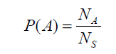

Apêndice A — Alguns pressupostos para o processamento de fala
Apêndice do Capítulo Texto ou fala?
A.1 Alguns pressupostos:1 estatística2, probabilidade, teoria da informação
Aleatoriedade e incerteza desempenham um papel importante em muitas disciplinas científicas. A maioria dos problemas de processamento de linguagem falada pode ser caracterizada em um contexto probabilístico. A teoria da probabilidade e estatística fornecem a linguagem matemática para descrever e analisar tais sistemas.
Os critérios e métodos usados para estimar as probabilidades desconhecidas e densidades de probabilidade formam a base para a teoria da estimativa. A teoria da estimativa forma as bases para a aprendizagem de parâmetros no reconhecimento de padrões.
O teste de significância também é importante em estatística, que lida com a confiança da inferência estatística, como saber se a estimativa de algum parâmetro pode ser aceita com confiança. No reconhecimento de padrões, o teste de significância é extremamente importante para determinar se a diferença observada entre dois classificadores diferentes é real.
A teoria da informação foi originalmente desenvolvida para sistemas de comunicação eficientes e confiáveis. Ela evoluiu para uma teoria matemática preocupada com a essência do processo de comunicação. Ela fornece uma estrutura para o estudo de questões fundamentais, como a eficiência da representação da informação e as limitações na transmissão confiável de informação através de um canal de comunicação. Muitos desses problemas são fundamentais para o processamento de fala.
Abordamos brevemente nesta seção algumas dessas questões, a fim de fornecer um panorama de conhecimentos fundamentais para o profissional que trabalha com o processamento da fala.
A.1.1 Probabilidade
A ideia de incerteza e probabilidade remonta a cerca de 3500 a.C., quando jogos de azar com objetos ósseos foram desenvolvidos no Egito. Dados cúbicos com marcações virtualmente idênticas aos dados modernos foram encontrados em túmulos egípcios datados de aproximadamente 2000 a.C. O jogo de dados desempenhou um papel importante no desenvolvimento inicial da teoria da probabilidade. A teoria matemática moderna da probabilidade acredita-se ter sido iniciada pelos matemáticos franceses Blaise Pascal (1623-1662) e Pierre Fermat (1601-1665) quando eles trabalharam em certos problemas de jogo envolvendo dados. O matemático inglês Thomas Bayes (1702-1761) foi o primeiro a usar a probabilidade indutivamente e estabeleceu uma base matemática para a inferência de probabilidade, levando ao que é agora conhecido como teorema de Bayes. A teoria da probabilidade tem se desenvolvido constantemente desde então e tem sido amplamente aplicada em diversos campos de estudo.
A teoria da probabilidade lida com as médias de fenômenos em massa que ocorrem sequencial ou simultaneamente. Frequentemente usamos expressões probabilísticas em nosso dia a dia, como quando dizemos: “É muito provável que o Dow (índice Dow Jones Industrial) atinja 12.000 pontos no próximo mês”, ou “A chance de chuvas dispersas em Seattle neste fim de semana é alta”. Cada uma dessas expressões se baseia no conceito de probabilidade, ou seja, a probabilidade de que algum evento específico ocorra.
A probabilidade pode ser usada para representar o grau de confiança no resultado de algumas ações (observações) que não são definitivas. Na teoria da probabilidade, o termo espaço amostral, S, é usado para se referir à coleção (conjunto) de todos os possíveis resultados. Um evento refere-se a um subconjunto do espaço amostral ou uma coleção de resultados. A probabilidade do evento A, denotada como P(A), pode ser interpretada como a frequência relativa com que o evento A ocorreria se o processo fosse repetido um grande número de vezes sob condições semelhantes. Com base nessa interpretação, P(A) pode ser calculado simplesmente contando o número total, S_N, de todas as observações e o número de observações A_N cujo resultado pertence ao evento A. Ou seja,

P(A) está limitado entre zero e um, ou seja, \(0 ≤ P(A) ≤ 1\) para todos os A.
O limite inferior da probabilidade P(A) é zero quando o conjunto de eventos A é um conjunto vazio. Por outro lado, o limite superior da probabilidade P(A) é um quando o conjunto de eventos A acontece de ser S.
A.1.2 Variáveis aleatórias
Os elementos em um espaço amostral podem ser numerados e referidos pelos números atribuídos. Uma variável X que especifica a quantidade numérica em um espaço amostral é chamada de variável aleatória. Portanto, uma variável aleatória X é uma função que mapeia cada resultado possível s no espaço amostral S para números reais X(s). Como cada evento é um subconjunto do espaço amostral, um evento é representado como um conjunto de {s} que satisfaz {s | X (s) = x}. Usamos letras maiúsculas para denotar variáveis aleatórias e letras minúsculas para denotar valores fixos da variável aleatória. Assim, a probabilidade de X = x é denotada como:
P(X = x) = P(s | X (s) = x)
Uma variável aleatória X é uma variável aleatória discreta, ou X tem uma distribuição discreta, se X pode assumir apenas um número finito n de valores diferentes x1, x2, ..., xn, ou no máximo, uma sequência infinita de valores diferentes x1, x2, ... Se a variável aleatória X é uma variável aleatória discreta, a função de probabilidade (f.p.) ou função de massa de probabilidade (f.m.p.) de X é definida como a função p tal que, para qualquer número real x:
Px(x) = P(X = x)
A.1.3 Média e Variância
A média é uma medida de tendência central que representa o valor médio de um conjunto de dados. É calculada somando todos os valores do conjunto e dividindo pelo número total de valores. A média é útil para determinar um valor representativo do conjunto de dados e fornecer uma estimativa de seu centro.
A variância, por outro lado, é uma medida de dispersão que quantifica a variabilidade ou a dispersão dos valores em relação à média. Ela indica o quão afastados os valores individuais estão da média. A variância é calculada encontrando a diferença entre cada valor e a média, elevando ao quadrado essas diferenças, somando-as e dividindo pelo número total de valores. A variância fornece uma ideia da dispersão dos dados e é utilizada para avaliar a variabilidade de um conjunto de dados.
A.1.3.1 A Lei dos Grandes Números
A Lei dos Grandes Números é um conceito fundamental na estatística que descreve o comportamento dos resultados médios de uma sequência de experimentos aleatórios. Ela estabelece que, à medida que o número de observações aumenta, a média dessas observações se aproxima do valor esperado teórico ou verdadeiro.
Em termos mais simples, a Lei dos Grandes Números afirma que, quando repetimos um experimento aleatório um grande número de vezes, a média dos resultados observados se aproximará cada vez mais da média esperada ou valor esperado. Isso implica que, quanto mais dados são coletados, mais confiáveis e representativos se tornam os resultados.
Essa lei é de fundamental importância na estatística, pois permite que façamos inferências e tomemos decisões com base em amostras representativas dos dados. Ela estabelece uma relação entre o tamanho da amostra e a precisão das estimativas estatísticas, proporcionando uma base sólida para a análise e interpretação de dados em diversas áreas, inclusive em PLN.
A.1.4 Covariância e Correlação
A covariância e a correlação são medidas estatísticas que descrevem o relacionamento entre duas variáveis.
A covariância mede a relação linear entre duas variáveis aleatórias. Ela indica como as duas variáveis variam juntas. Se a covariância for positiva, isso significa que as variáveis tendem a aumentar ou diminuir juntas. Por outro lado, se a covariância for negativa, indica que as variáveis têm uma relação inversa, ou seja, uma tende a aumentar quando a outra diminui. Uma covariância de zero indica que não há uma relação linear aparente entre as variáveis.
No entanto, a covariância por si só não fornece uma medida padronizada para a força e a direção da relação entre as variáveis. É aí que a correlação entra em cena. A correlação é uma medida padronizada que varia entre -1 e 1, que indica a força e a direção da relação linear entre as variáveis.
Uma correlação de 1 indica uma relação linear positiva perfeita, onde as variáveis aumentam ou diminuem juntas na mesma proporção. Uma correlação de -1 indica uma relação linear negativa perfeita, onde as variáveis têm uma relação inversa perfeita. Uma correlação de 0 indica que não há uma relação linear aparente entre as variáveis.
A correlação é uma medida mais útil que a covariância pois é independente da escala das variáveis e fornece uma medida padronizada para a força da relação linear entre elas. Ela é amplamente utilizada na análise de dados, no planejamento de experimentos e na modelagem estatística para entender e quantificar o relacionamento entre variáveis.
A.1.5 Vetores aleatórios e distribuições multivariadas
Um vetor aleatório é uma coleção de variáveis aleatórias que são agrupadas como um único objeto. Cada elemento do vetor aleatório representa uma variável aleatória diferente, e o vetor como um todo pode ser usado para descrever simultaneamente o comportamento dessas variáveis aleatórias.
Uma distribuição multivariada é uma distribuição de probabilidade que descreve conjuntamente as probabilidades de ocorrência de múltiplas variáveis aleatórias. Ela fornece informações sobre as relações e dependências entre as variáveis aleatórias em um conjunto de dados.
Ao lidar com vetores aleatórios, é comum usar distribuições multivariadas para modelar a relação conjunta entre as variáveis. Uma distribuição multivariada especifica a forma como as variáveis aleatórias se relacionam entre si e como a probabilidade é distribuída em seu espaço de valores conjunto.
Essas distribuições são amplamente utilizadas em áreas como estatística, ciência de dados e análise de dados para analisar e entender as relações entre múltiplas variáveis aleatórias. Elas permitem realizar análises conjuntas, como calcular a probabilidade conjunta de eventos, estimar parâmetros e fazer previsões baseadas nas relações entre as variáveis.
A.1.6 Algumas distribuições úteis
Existem várias distribuições relevantes para aplicações de probabilidades e estatística em sistemas de língua falada. A escolha da distribuição adequada depende do contexto e dos dados específicos sendo analisados. Aqui estão alguns exemplos:
- Distribuição Binomial: É usada para modelar o número de sucessos em um número fixo de tentativas independentes, onde cada tentativa tem apenas dois resultados possíveis (sucesso ou fracasso). Por exemplo, pode ser usada para modelar a probabilidade de acerto em um teste de múltipla escolha, onde cada pergunta tem apenas duas opções de resposta.
- Distribuição de Poisson: É usada para modelar a ocorrência de eventos raros em um intervalo de tempo ou espaço. Por exemplo, pode ser usada para modelar a taxa de ocorrência de palavras específicas em um discurso ou texto.
- Distribuição Gaussiana (Normal): É uma das distribuições mais comuns e amplamente utilizadas. Ela descreve dados simétricos ao redor de uma média, com a maioria dos valores concentrados perto da média e uma cauda que se estende para ambos os lados. É frequentemente usada para modelar características acústicas de fala, como duração de fonemas ou intensidade de som.
- Distribuição de Bernoulli: É uma distribuição específica da distribuição binomial, usada quando há apenas duas possibilidades de resultado (sucesso ou fracasso) em um único evento. Pode ser usada para modelar a probabilidade de uma determinada palavra aparecer em uma frase ou ocorrência de um determinado evento em um diálogo.
- Distribuição de Dirichlet: É uma distribuição multivariada usada para modelar a distribuição de probabilidades em um espaço de múltiplas categorias. É frequentemente usada em processamento de linguagem natural para modelar a distribuição de palavras em um corpus de texto.
A.1.7 Teoria da Estimação e Teste de Significância
A Teoria da Estimação é um ramo da estatística que lida com métodos e técnicas para estimar parâmetros desconhecidos com base em dados amostrais. Ela envolve a utilização de informações amostrais para fazer inferências sobre características de uma população maior. A teoria da estimação fornece procedimentos e medidas para determinar o valor estimado de um parâmetro desconhecido, bem como sua precisão e confiabilidade.
No contexto de sistemas de língua falada, a teoria da estimação pode ser aplicada de várias maneiras. Por exemplo, pode ser usada para estimar a taxa de erro de reconhecimento de fala em um sistema de reconhecimento automático de fala. Com base em uma amostra de dados de entrada e saída do sistema, é possível estimar a taxa de erro geral do sistema e a variação dessa estimativa.
Existem vários tipos de estimação utilizados na teoria da estimação. Aqui estão alguns exemplos:
- Estimação de ponto: Nesse tipo de estimação, um único valor é estimado para o parâmetro desconhecido. Por exemplo, se quisermos estimar a média de altura de uma população com base em uma amostra, podemos usar a média amostral como uma estimativa pontual desse parâmetro.
- Estimação por intervalo: Ao contrário da estimação de ponto, a estimação por intervalo fornece um intervalo de valores dentro do qual o parâmetro desconhecido provavelmente está contido. Por exemplo, podemos usar uma estimativa intervalar para estimar a proporção de falantes nativos de uma língua específica em uma determinada região, fornecendo um intervalo de confiança em torno dessa estimativa.
- Estimação por máxima verossimilhança: Nesse método, o objetivo é encontrar o valor do parâmetro que maximiza a probabilidade de obter os dados observados. A estimativa de máxima verossimilhança é frequentemente usada para estimar os parâmetros de distribuições de probabilidade em sistemas de língua falada, como a probabilidade de ocorrência de palavras em um corpus de texto.
- Estimação por mínimos quadrados: Esse método é amplamente utilizado na regressão linear, onde a linha de melhor ajuste é encontrada minimizando a soma dos quadrados das diferenças entre os valores observados e os valores previstos pela linha. Por exemplo, na modelagem da fala, a estimação por mínimos quadrados pode ser usada para encontrar os coeficientes que melhor ajustam um modelo de predição acústica aos dados de fala.
O teste de significância, por sua vez, é uma técnica estatística utilizada para avaliar a força da evidência contra uma hipótese nula. Ele permite determinar se os resultados observados são estatisticamente significativos ou se podem ser atribuídos ao acaso. O teste de significância envolve a comparação dos dados observados com uma distribuição de probabilidade teórica esperada sob a hipótese nula.
Em sistemas de língua falada, o teste de significância pode ser usado para determinar se existe uma diferença significativa na taxa de reconhecimento entre dois algoritmos de reconhecimento de fala. Realizando testes estatísticos apropriados, é possível avaliar se a diferença observada na taxa de reconhecimento é estatisticamente significativa ou se pode ser atribuída ao acaso.
Existem diferentes tipos de testes de significância estatística que podem ser aplicados em diversos cenários. Aqui estão alguns exemplos:
- Teste t de Student: É usado para testar se há diferença significativa entre as médias de duas amostras independentes. Por exemplo, pode ser aplicado para determinar se a pontuação média de fluência em uma língua é significativamente diferente entre dois grupos de alunos.
- Teste qui-quadrado: É utilizado para testar a independência entre duas variáveis categóricas. Por exemplo, pode ser usado para verificar se existe uma associação significativa entre o gênero dos falantes e o uso de determinados fonemas em um idioma.
- Teste de ANOVA: É aplicado para testar se há diferenças significativas entre as médias de três ou mais grupos independentes. Por exemplo, pode ser usado para comparar as médias de desempenho em fala entre diferentes grupos de falantes nativos e não nativos.
- Teste de correlação: É utilizado para avaliar se existe uma relação significativa entre duas variáveis contínuas. Por exemplo, pode ser aplicado para verificar se há uma correlação significativa entre a frequência fundamental da voz e a altura percebida da fala.
- Teste de qui-quadrado de ajuste: É usado para verificar se uma distribuição observada se ajusta a uma distribuição teórica específica. Por exemplo, pode ser aplicado para verificar se a distribuição de frequência de palavras em um corpus de texto se ajusta à distribuição de Zipf.
Essas técnicas estatísticas, teoria da estimação e teste de significância, são essenciais para analisar dados de sistemas de língua falada, avaliar o desempenho de algoritmos e fazer inferências estatísticas relevantes. Elas permitem tomar decisões informadas com base em evidências estatísticas sólidas.
A.1.8 Teoria da Informação, Entropia e Informação Mútua
A Teoria da Informação é um campo da matemática e da ciência da computação que se preocupa em quantificar e estudar a transmissão de informações. Foi desenvolvida por Claude Shannon na década de 1940 e tem uma ampla gama de aplicações, incluindo o processamento da língua natural falada.
A entropia é um conceito fundamental na Teoria da Informação. Ela mede a quantidade média de informação contida em uma fonte de dados. Quanto maior a entropia, maior a incerteza e, portanto, maior a quantidade de informação necessária para descrever ou transmitir os dados. A entropia é calculada com base na distribuição de probabilidade dos eventos. Em processamento da língua natural falada, a entropia pode ser usada para medir a previsibilidade das palavras em um corpus de fala, ou seja, quanto elas são esperadas ou inesperadas com base nas frequências de ocorrência.
A informação mútua é uma medida de dependência entre duas variáveis aleatórias. Ela quantifica a quantidade de informação que uma variável fornece sobre a outra. A informação mútua é calculada com base nas distribuições de probabilidade conjuntas das variáveis. Em termos simples, a informação mútua mede quanto a informação de uma variável reduz a incerteza sobre a outra variável. Em processamento da língua natural falada, a informação mútua pode ser usada para medir a associação entre diferentes palavras em um corpus de fala ou a dependência entre características acústicas e fonéticas.
A relação entre esses três conceitos é que a entropia é a medida fundamental da quantidade de informação contida em uma fonte de dados, enquanto a informação mútua mede a dependência ou associação entre duas fontes de informação. A entropia pode ser usada para calcular a informação mútua entre duas variáveis aleatórias, fornecendo uma medida da quantidade de informação compartilhada por essas variáveis.
Em relação às aplicações em processamento da língua natural falada, esses conceitos têm várias utilidades:
- Modelagem de linguagem: A entropia pode ser usada para medir a complexidade ou a incerteza da sequência de palavras em um corpus de fala, ajudando a desenvolver modelos de linguagem mais eficientes e precisos.
- Codificação de voz: A Teoria da Informação fornece princípios para a compressão e transmissão eficiente de sinais de voz, reduzindo a taxa de bits necessária para transmitir a informação de forma confiável.
- Detecção de padrões: A informação mútua pode ser aplicada para identificar padrões relevantes em dados de fala, como a associação entre determinados fonemas ou palavras em um contexto específico.
- Reconhecimento de fala: A informação mútua pode ajudar a melhorar a precisão dos sistemas de reconhecimento de fala, fornecendo informações sobre a dependência entre as características acústicas e os fonemas ou palavras correspondentes.
Esta seção é amplamente baseada nas discussões em (Gries, 2019; Jurafsky; Martin, 2023)↩︎
Recomendamos o ambiente de programação R para a computação estatística. Para acessá-lo, cf. An Introduction to R (r-project.org) (https://cran.r-project.org/doc/manuals/R-intro.html)↩︎